Установка для импульсной магнитно-электрической обработки биологических объектов
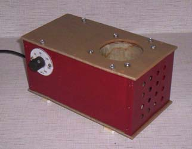
Введение
Воздействие магнитного поля на биологические объекты представляет определенный интерес. Предполагается, например, что магнитная обработка посадочного материала улучшает всхожесть семян, повышает урожайность агрокультур. Имеются также гипотезы об угнетении жизнедеятельности болезнетворных бактерий магнитным полем. Для проведения работ в этих и других направлениях была сконструирована установка, позволяющая получать в рабочей зоне импульсное магнитное поле и сопутствующее ему индуцированное электрическое поле.
1. Теория
Расчет напряженности электрического поля, индуцированного импульсным магнитным полем
Для генерации импульсного магнитного поля может использоваться соленоид (рис. 1), характеризуемый индуктивностью L и активным сопротивлением R. Магнитное поле создается внутри соленоида (в рабочей зоне). При генерации импульсного магнитного поля возникает индуцированное электрическое поле в соответствии с законом электромагнитной индукции Фарадея [5].
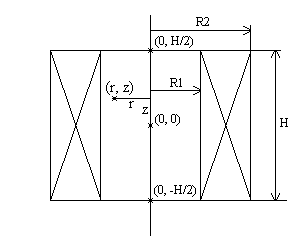
Рис. 1. Цилиндрический соленоид в разрезе: R1 - внутренний радиус, R2 - внешний радиус, H - высота, (r, z) - полярные координаты расчетной точки относительно центра соленоида (0, 0).
Закон электромагнитной индукции для замкнутого контура:
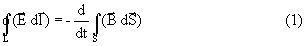
В формуле (1) E – напряженность электрического поля по контуру L, B – магнитная индукция на поверхности S, натянутой на контур L.
Для цилиндрического соленоида задача имеет осевую симметрию, поэтому можно в качестве контура L принять окружность радиуса r, на которую натянут круг S того же радиуса. Вектор электрической напряженности на окружности L имеет только угловую составляющую, направленную по касательной к окружности. Тогда, по теореме о среднем:

где B - значение аксиальной составляющей магнитной индукции в некоторой внутренней точке поверхности S. Отсюда можно выразить электрическую напряженность E:

Для получения максимального значения амплитуды напряженности индуцированного электрического поля необходимо использовать импульсы магнитного поля с большой крутизной переднего фронта [4], что может быть достигнуто при подключении соленоида к источнику постоянного напряжения. Если постоянная времени соленоида мала (t = L/R ≈ 1 мсек), в качестве источника постоянного напряжения может рассматриваться сеть переменного тока напряжением 220 В частотой 50 Гц. Подключение соленоида к ней должно происходить с некоторым запаздыванием относительно момента перехода сетевого напряжения через ноль. Если запаздывание изменять от полупериода до четверти периода, то можно регулировать амплитуду магнитной индукции и, соответственно, электрической напряженности от нуля до максимума.
Если соленоид с индуктивностью L и активным сопротивлением R подключается к источнику постоянного напряжения U0, то можно записать следующее выражение для силы тока I, протекающего через соленоид:
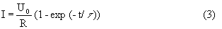
где t – постоянная времени соленоида, t = L/R.
Индукция магнитного поля, возбуждаемого соленоидом, определяется соотношением B = fI, где I – величина тока, протекающего через соленоид, f – коэффициент, определяемый форм-фактором соленоида и координатами точки поля.
Тогда, с учетом (3) можно найти скорость изменения магнитной индукции:

Если коэффициент f известен для некоторой величины тока I0: f = B0/I0, то с учетом того, что t = L/R, получаем:
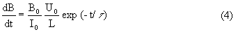
Скорость изменения магнитной индукции и, соответственно, величина напряженности наведенного электрического поля (см. (2)) имеют максимум при t = 0, то есть в момент подключения импульсного соленоида к источнику питания:
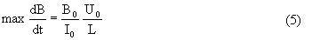
Из (2) и (5) находим амплитуду напряженности электрического поля E0:
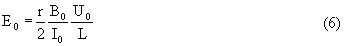
Параметр f = B0/I0 может быть рассчитан с помощью программы Coil [1], а амплитуда тока - с помощью программы UNI [2]. Тогда для r = 22.5 мм = 0.0225 м, B0 = 0.3 Тл, I0 = 150 А, U0 = 300 В, L = 2 мГн = 0.002 Гн получим из (6):
E0 ≈ 3.5 В/м
Расчетные значения амплитуд магнитной индукции B0 = 0.3 Тл и электрической напряженности E0 = 3.5 В/м при амплитуде тока I0 = 150 А представляются вполне приемлемыми для проведения опытов по магнитно-электрической обработке объектов, имеющих биологическую природу.
2. Техническая реализация
На рис. 2 представлена блок-схема установки для импульсной магнитно-электрической обработки биологических объектов.
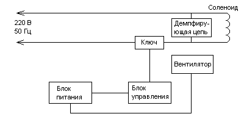
Рис. 2. Блок-схема установки для импульсной магнитно-электрической обработки биологических объектов.
Соленоид через силовой ключ подключается на короткое время непосредственно к сети переменного тока напряжением 220 В частотой 50 Гц. Так как нагрузка имеет активно-индуктивный характер, параллельно ей установлена демпфирующая цепь. Сигнал управления, подаваемый на ключ, вырабатывается в блоке управления. Блок питания обеспечивает работу всех узлов установки. Для охлаждения силового ключа, демпфирующей цепи и соленоида используется вентилятор. Внешний вид установки показан на рис. 3.
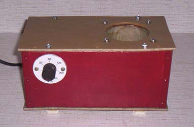
Рис. 3. Установка для импульсной магнитно-электрической обработки биологических объектов.
Параметры установки:
Для измерения электрической напряженности использовалась измерительная катушка. Чертеж измерительной катушки показан на рис. 4, внешний вид - на рис. 5.
Рис. 4. Измерительная катушка в разрезе.
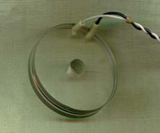
Рис. 5. Измерительная катушка (внешний вид): диаметр 45 мм, высота 10 мм.
Измерительная катушка представляет из себя цилиндрический каркас из изоляционного материала с узкой прорезью, в которую намотан 1 метр провода. Радиус каркаса (с учетом размеров прорези и обмотки) равен радиусу контура (r), на котором необходимо производить измерения электрической напряженности. При этом электродвижущая сила (ЭДС) катушки, возникающая за счет изменения магнитного потока, проходящего через ее сечение, численно равна электрической напряженности индуцированного электрического поля. Измерения амплитуды ЭДС производились с помощью двухканального осциллографа, к одному из входов которого подключалась измерительная катушка. Для измерения магнитной индукции использовался тесламетр с датчиком Холла [3]. Выход тесламетра подключался к другому каналу осциллографа. Схема измерений приведена на рис. 6.
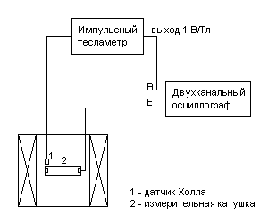
Рис. 6. Схема измерения индукции магнитного поля и напряженности индуцированного электрического поля.
Измеренные значения амплитуды электрической напряженности и магнитной индукции (аксиальная составляющая) с хорошей точностью соответствуют расчетным данным: E0 ≈ 3.5 В/м, B0 ≈ 0.3 Тл в точках контура радиусом r = 22.5 мм, расположенном в центре (z ≈ 0) соленоида. Примерный вид магнитного и электрического импульсов на экране осциллографа показан на рис. 7.
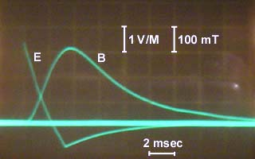
Рис. 7. Временная развертка импульса магнитной индукции и электрической напряженности. Масштаб: 1 деление по вертикали E - 1 В/м, B - 100 мТл; 1 деление по горизонтали время - 2 мс.
Ссылки:
22.02.2007
Альтернативные источники
энергии
Компьютеры и
Интернет
Магнитные поля
Механотронные системы
Перспективные
разработки
Электроника и
технология